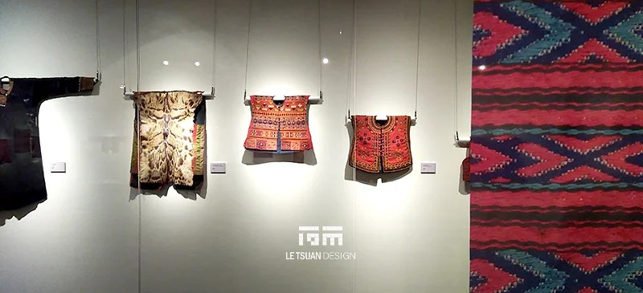
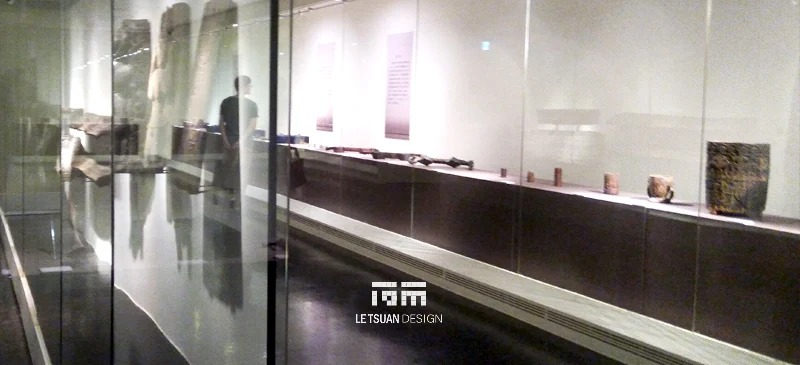
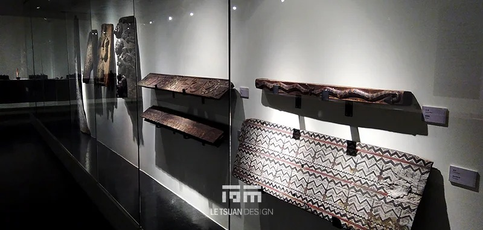
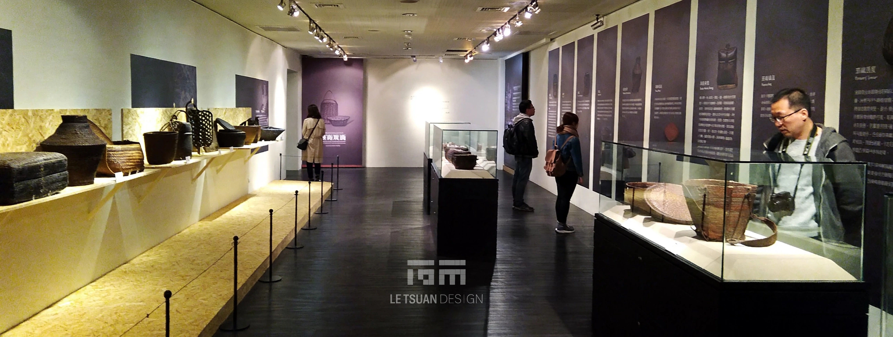

Amazing Homeland Cheng-Hsiung Chen’s Collection of Taiwanese Indigenous Artifacts
CLIENT
National Museum of History
LOCATION
Taipei, Taiwan
YEAR
2017
CATEGORY
Exhibition Design, Graphic Design, Visual Design, Construction
A Low-Light Room, Built Around the Objects
The exhibition sits inside a deliberately low-illuminance museum atmosphere. Lighting is controlled with enough precision that visual noise disappears and each artifact emerges on its own, inside its own pool of light. Nothing decorative competes for attention; the eye stays on the craftsmanship.
01 Garment Gallery, A Suspended Theater of Light
Long garments hang from a suspended tension system, each piece held by fine steel cables in front of a clean, off-white main wall, which gives the fabric a sense of lightness and floating. Every garment gets its own anti-glare spotlight, angled precisely to bring out the three-dimensional luster of glass beads, embroidery appliqués, and fur textures. Information plaques stay low on the wall and minimal, so they never compete with the pieces themselves.
02 Terminus Feature, The Aesthetics of Woven Identity
The circulation ends at a monumental, full-height traditional woven tapestry that closes out the route. An interlaced diamond pattern in red, black, and blue-green covers the entire surface, forming the strongest visual punctuation point of the whole journey and standing in as a contemporary answer to the exhibition's core idea: that woven pattern is identity worn on the body.
03 Basketry and Pottery Gallery, An Immersive Corridor of Living
From here the space shifts into a dark, immersive corridor. A mist-black floor and deep purple-grey walls pair with white graphic panels in a low-contrast palette that lets the artifacts' own natural colors carry the room.
On one side, OSB shelving holds daily objects like baskets and wooden mortars, lit from below by warm 3000K linear strips recessed under each shelf, the light washing upward to outline the objects and add a lived-in warmth against the otherwise solemn tone.
On the other side, glass vitrines and freestanding plinths hold pottery jars and urns, each one spotlighted on a black pedestal like an actor under a stage light. Black retractable stanchions choreograph the flow through this section, balancing protection for the artifacts against the pace of viewing.
04 Sculpture and Fine Pottery Gallery, A Sanctuary of Time
The final gallery is built as a quiet sanctuary. A continuous run of full-height glass vitrines sits against a dark, reflective floor, and the reflections stretch the space into a deep, serene depth. Stone carvings, ceramic figures, and pots each get their own micro-spotlight and a suspended caption panel, and visitors move through it the way they might move through a corridor of time, the contrast between low ambient light and sharp accent lighting giving weight to the history each piece carries.
Design Language
Lighting strategy: low ambient illuminance paired with high-precision accent lighting. Material palette: blackened steel plinths, dark wood flooring, off-white walls, OSB shelving. The whole exhibition runs on one consistent museum logic, dark environment, bright artifact, softened by warm light details built into the shelving, holding a careful balance between solemnity and warmth so that attention keeps returning to the object itself.
RELATED PROJECTS



